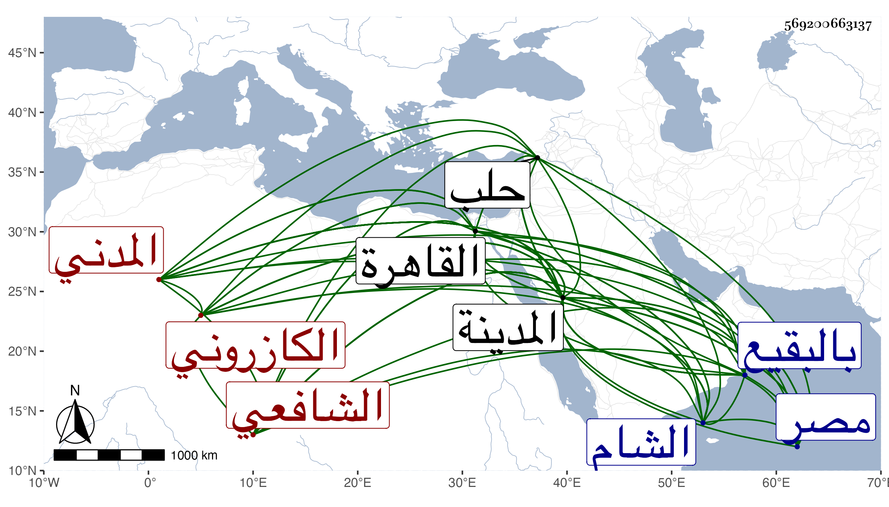

0902Sakhawi.DawLamic.ITO20230111-ara1.EIS1600.569200663137
Biography ID: 569200663137
193
محمد بن أحمد بن محمد بن محمود بن إبراهيم بن أحمد بن روزبة هكذا رأيته بخطه الجمال المحب والشمس أبو عبد الله وأبو البركات بن الصفي أبي العباس بن الشمس أبي الايادي بن الجمال أبي الثناء الكازروني الأصل المدني الشافعي . ولد في ليلة الجمعة سابع عشر ذي القعدة سنة سبع وخمسين وسبعمائة بالمدينة النبوية ومات أبوه وهو صغير فكفله عمه العز عبد السلام وحفظ الحاوي وعدة مختصرات منها العمدة وسمع بها من أهلها والقادمين عليها كالعز أبي عمر بن جماعة سمع عليه غالب السنن الصغرى للنسائي والعفيفين اليافعي والمطري والعليين ابن العز يوسف الزرندي والنويري القاضي والجمال الأميوطي والجلال الخجندي وابن صديق الشمس أبي عبد الله محمد بن أحمد الششتري وسعد الله الاسفرائني والأمين بن الشماع وابن عرفة والزينين العراقي والمراغي والبدرين إبراهيم بن الخشاب وعبد الله بن فرحون ويحيى بن موسى القسنطيني ويوسف ابن إبراهيم بن البناء وأبي العباس أحمد بن محمد المدني والمؤذن وبعد ذلك بقراءته في آخرين وأجاز له في سنة اثنتين وستين فما بعدها العماد بن كثير والشمس الكرماني وابن قواليح والكمال بن حبيب وأخوه البدر حسين ومحمد بن الحسن الحارثي وابن قاضي شهبة وابن الهبل وابن أميلة والصلاح بن أبي عمر وأحمد ابن سالم المؤذن والعفيف النشاوري والبرهان القيراطي وجماعة ، وتفقه ببلده بجماعة وأخذ فنون الحديث عن العراقي في ألفيته وشرحها والنحو عن الجمال محمد بن الشهاب أحمد بن زين عبد الرحمن الشامي والتاج عبد الواحد بن عمر ابن عياذ الانصاري المالكي وقرأ على جلال الخجندي الحنفي رسالة له في بيان فضيلة كثرة الصلاة على صاحب أكرم الخلق المتضمنة لبيان بعض ما هو من أفضل الأعمال وأقرب الطرق وهي في ورقتين وأجازه بها ووصفه بالولد الرشيد صاحب الهدى السديد الشاب الفاضل شمس الدين أصلح الله شأنه وصانه عما شانه . وارتحل إلى الديار المصرية والشام وغيرهما وأخذ عن البهاء أبي البقاء السبكي الفقه والعربية وغيرهما ولازمه وكذا لازم السراج البلقيني والبرهان الأبناسي بل أخذ بحلب عن الشهاب الأذرعي ، وأذن له البهاء والبلقيني وغيرهما في الإفتاء والتدريس ، وكذا أجاز له بل ولجميع فقهاء المدينة الشرف إسماعيل بن المقري رواية تصانيفه إرشاد الغاوي في مسالك الحاوي وشرحه والروض والرقائق وعنوان الشرف والبديعية وشرحها وماله من تصنيف ومنظوم ومنثور ومروي وذلك في سنة ست وثلاثين وثمانمائة وتصدى للإقراء والإفتاء والتحديث فانتفع به الأئمة وصار فقيه المدينة وعالمها حتى كان الزين المراغي يقول أنه قام عنا فيها بفرض كفاية لإقباله على الإقراء وشغل الطلبة ووصفه النجم السكاكيني في إجازة ولده بشيخ الإسلام مفتي الأنام الجامع بين المشروع والمعقول البارع في الفروع والأصول ذي الهمة العلية مدرس الروضة النبوية ، وقد اختصر المغني للبارزي وشرح مختصر التنبيه للشرف عيسى بن أبي غرارة البجلي في ثلاثة أسفار لم يبيضه وكذا كتب في آخر حياته شرحا على شرح التنبيه وقبل ذلك شرحا مختصرا في مجلد على فروع ابن الحداد وكتب تفسيرا اعتمد فيه على القرطبي وكان له كالمرآة ينظر فيه وينقل منه الأحكام والأحاديث وأسباب النزول ، وولي قضاء المدينة في ربيع الثاني أو رجب سنة اثنتي عشرة بعد موت أبي حامد المطري وأفردت الخطابة لناصر الدين بن صالح ثم لم يلبث أن استقر في القضاء أيضا قبل انفصال السنة وذلك في ثامن عشري ذي القعدة ثم أعيد في سنة أربع عشرة ولكنه لم يباشره حينئذ فانه كان بالقاهرة وانفصل عنه قبل وصوله وذلك في إحدى الجماديين من التي تليها واستناب في غيبته ابن عمه الشرف تقي بن عبد السلام الكازروني . واستمر مقتصرا على الأشغال والعبادة والإقبال على نفسه حتى مات في عشاء ليلة الاثنين ثاني عشري شوال سنة ثلاث وأربعين وصلى عليه صبح الاثنين في الروضة الشريفة ثم دفن بالبقيع رحمه الله وإيانا . وقد ترجمه شيخنا في أنبائه باختصار فقال : انتهت إليه رياسة العلم بالمدينة ولم يبق هناك من يقاربه وكان ولي قضاء المدينة والخطابة مرة ثم صرف ودخل القاهرة مرارا منها في سنة ثمان وعشرين ، وسمي والده عبد الله سهوا ، وممن سمع منه التقى بن فهد وأبناه وأبو الفرج المراغي وأخذ عنه دراية وعالم لايحصى وفي الأحياء غيرواحد ممن يروي عنه كحسين الفتحي فإنه أكثر عنه وكان مجتهدا في العبادة حريصا على التهجد لم يضبط عنه تركه في سفر ولا حضر إلا ليلة في مرض موته ، وهو في عقود المقريزي باختصار وقال صحبته زمانا ونعم الرجل رحمه الله .
